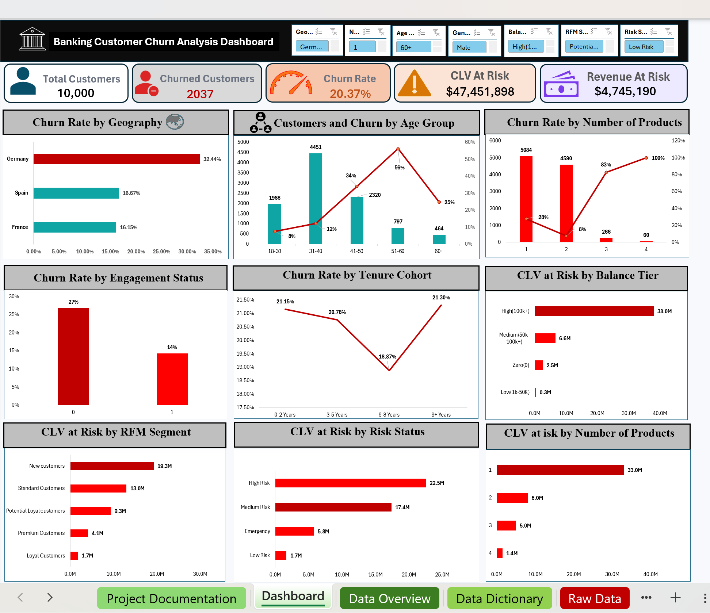

Data Analysis
SQL
Excel
Data Cleaning
Pivot Tables
Dashboarding
Banking Data Intelligence Dashboard
I use SQL and Excel to clean, analyze, and explain banking and customer data, with a focus on churn, customer value, KPI dashboards, and practical business recommendations.
Analyst Profile
I am Sarbesh Acharya, a final-year BScIT student from Chitwan, Nepal. My goal is to become a Banking and Finance Data Analyst by building projects that connect technical analysis with business decisions.
Right now I am strengthening my Excel and SQL foundation through data cleaning, pivot tables, formulas, dashboard design, customer segmentation, KPI analysis, and business recommendations.
Skills Matrix
Featured Project
Analyzed 10,000 banking customer records to identify churn patterns, high-risk customer groups, CLV exposure, revenue risk, and retention priorities using SQL analysis and an Excel dashboard.

Banking Churn Dashboard Preview
The analysis combines SQL-based customer investigation with an Excel dashboard containing KPI cards, slicers, RFM segmentation, CLV at Risk, Revenue at Risk, and risk scoring. The final output highlights high-priority customer groups, estimates business exposure, and gives practical retention recommendations for business teams.
Business Case Study
Banking teams need to know which customers are likely to leave, which segments carry higher value, and where retention effort should be prioritized.
Prepare customer data with SQL and Excel, create pivot summaries, build KPIs, segment customers, and design a dashboard for decision-making.
Highlight at-risk groups using customer behavior, RFM signals, churn indicators, CLV at risk, revenue at risk, and retention priority levels.
Recommend targeted outreach, customer monitoring, segment-specific offers, and KPI tracking so business teams can act on the analysis.
Learning Roadmap
Formulas, lookup functions, pivot tables, charts, data cleaning, dashboard design, and business analysis.
Data modeling basics, Power Query, DAX fundamentals, interactive dashboards, KPI reporting, and business storytelling.
Pandas, data cleaning, exploratory data analysis, visualization, automation, and finance-focused analysis.
Apply Excel, SQL, Power BI, and Python to banking, finance, customer analytics, risk, revenue, and business decision-making projects.
Contact
I am building a practical Excel + SQL portfolio and would be excited to discuss banking analytics, customer churn, dashboard reporting, and business analysis opportunities.